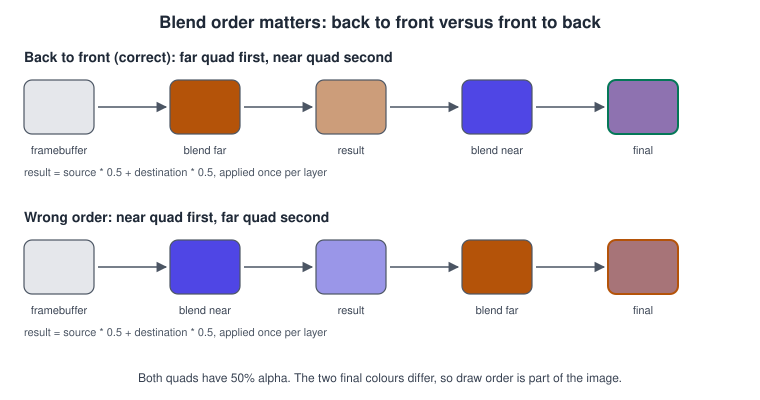
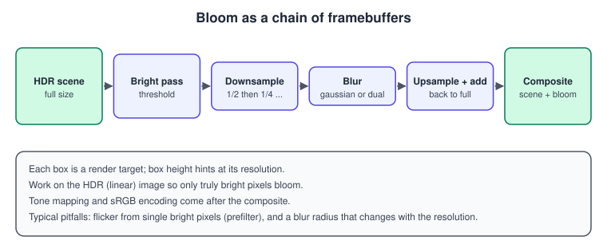
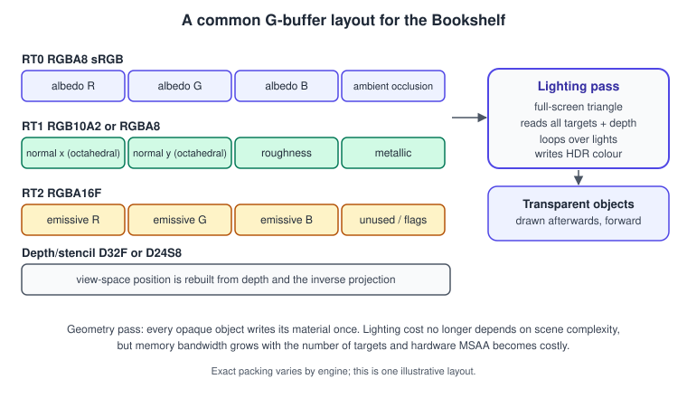

Transparency, Blending and Post-processing
|
This content was generated with the assistance of AI and should be verified against the official documentation before being relied on in production. |
Once a scene has opaque, correctly lit geometry, two questions remain. How is something that is partly see-through (glass, a book jacket’s cellophane, dust in the lamp light, a UI overlay) combined with what is behind it? And what happens to the finished image before it reaches the screen (anti-aliasing, glow, grading)? This page covers both. Blending is the last fixed-function stage of the pipeline described in The Rendering Pipeline; post-processing is a chain of full-screen passes over render targets; deferred shading is a way of organising the opaque pass so that lighting becomes a post-process too. The page was checked in November 2026. Examples use OpenGL 4.5, Vulkan 1.3, WebGPU (Chrome and Edge 113 and later, Firefox 141 and later on Windows, Safari 26) and GLSL 4.50; the techniques apply unchanged to Metal and Direct3D.
The Bookshelf provides the examples: a glass pane in front of the shelf (blending and sorting), floating dust in the lamp light (alpha-blended particles), an anti-aliased, glowing lamp (MSAA or TAA, bloom) and a many-light version of the shelf (deferred or forward+).
Blending
The blend equation
When a fragment survives the depth and stencil tests, the blend unit combines its colour (the source, \(C_s\), alpha \(A_s\)) with the colour already in the render target (the destination, \(C_d\), alpha \(A_d\)) according to
\[ C_{out} = C_s \cdot F_s \;\mathrm{op}\; C_d \cdot F_d \]
where \(F_s\) and \(F_d\) are blend factors and op is the blend operation. The alpha channel is combined by a separate equation, which can use different factors and a different operation. Most APIs offer the same set of factors (zero, one, source colour, source alpha, destination colour, destination alpha, constant colour or alpha, and their complements), and the operations add, subtract, reverse subtract, minimum and maximum. Several render targets can have independent blend states. Dual-source blending (a second fragment output used as a factor) enables per-channel coverage, as used for subpixel text.
The common recipes:
| Effect | Factors (source, destination) | Result |
|---|---|---|
Straight alpha (the default "transparency") |
source alpha, one minus source alpha |
\(C_s A_s + C_d (1 - A_s)\) |
Premultiplied alpha |
one, one minus source alpha |
\(C_s + C_d (1 - A_s)\) with \(C_s\) already multiplied by \(A_s\) |
Additive (fire, glow, dust, lights) |
source alpha or one, one |
\(C_s A_s + C_d\); brightens, never darkens, order independent |
Multiply (shadow decals, tinted glass) |
destination colour, zero |
\(C_s C_d\); darkens |
Screen |
one, one minus source colour |
\(C_s + C_d (1 - C_s)\); brightens, never above 1 |
Fixed-function blend hardware only operates on the output of the fragment shader, and on current GPUs on one render target format at a time: 8-bit normalised, float and integer targets behave differently (integer targets cannot blend). Programmable blending, available on tile-based GPUs through framebuffer-fetch extensions and on Apple GPUs through Metal’s programmable blending, lets the shader read the destination and write any function.
// OpenGL 4.5: straight alpha for the glass pane, additive for the dust, separate alpha equation.
glEnable(GL_BLEND);
glBlendEquationSeparate(GL_FUNC_ADD, GL_FUNC_ADD);
glBlendFuncSeparate(GL_SRC_ALPHA, GL_ONE_MINUS_SRC_ALPHA, // colour: As*Cs + (1-As)*Cd
GL_ONE, GL_ONE_MINUS_SRC_ALPHA); // alpha: As + (1-As)*Ad
glDepthMask(GL_FALSE); // transparent surfaces test depth but do not write it
glEnable(GL_DEPTH_TEST);
drawGlass();
glBlendFunc(GL_SRC_ALPHA, GL_ONE); // additive dust
drawDust();
glDepthMask(GL_TRUE);
glDisable(GL_BLEND);// WebGPU: premultiplied alpha, set per colour target in the render pipeline.
const pipeline = device.createRenderPipeline({
layout: "auto",
vertex: { module, entryPoint: "vs" },
fragment: {
module, entryPoint: "fs",
targets: [{
format: presentationFormat,
blend: {
color: { operation: "add", srcFactor: "one", dstFactor: "one-minus-src-alpha" },
alpha: { operation: "add", srcFactor: "one", dstFactor: "one-minus-src-alpha" },
},
writeMask: GPUColorWrite.ALL,
}],
},
depthStencil: { format: "depth24plus", depthWriteEnabled: false, depthCompare: "less" },
});Source: WebGPU: GPUBlendState
// Vulkan 1.3: the same state in a pipeline. Blending is baked into the pipeline (or set dynamically with
// VK_EXT_extended_dynamic_state3 where the device supports it).
VkPipelineColorBlendAttachmentState att{};
att.blendEnable = VK_TRUE;
att.srcColorBlendFactor = VK_BLEND_FACTOR_ONE;
att.dstColorBlendFactor = VK_BLEND_FACTOR_ONE_MINUS_SRC_ALPHA;
att.colorBlendOp = VK_BLEND_OP_ADD;
att.srcAlphaBlendFactor = VK_BLEND_FACTOR_ONE;
att.dstAlphaBlendFactor = VK_BLEND_FACTOR_ONE_MINUS_SRC_ALPHA;
att.alphaBlendOp = VK_BLEND_OP_ADD;
att.colorWriteMask = VK_COLOR_COMPONENT_R_BIT | VK_COLOR_COMPONENT_G_BIT |
VK_COLOR_COMPONENT_B_BIT | VK_COLOR_COMPONENT_A_BIT;
VkPipelineColorBlendStateCreateInfo blend{VK_STRUCTURE_TYPE_PIPELINE_COLOR_BLEND_STATE_CREATE_INFO};
blend.attachmentCount = 1;
blend.pAttachments = &att;Premultiplied alpha
Straight (non-premultiplied) alpha stores colour and coverage separately; premultiplied alpha stores colour already multiplied by alpha, \((C A, A)\). Premultiplied alpha is the better working representation for several reasons.
-
It blends with a single multiply-add, and the equation composes: blending A over B over C gives the same result however you group it, which the straight form does not.
-
Bilinear filtering of straight-alpha textures blends the colour of fully transparent texels (often black or a background-colour fringe) into the visible edge, producing dark or bright halos; filtering premultiplied texels does not.
-
It can express additive and normal blending in one image: set alpha to 0 and colour above zero for a glow.
-
Compositors (the browser, Android’s SurfaceFlinger, Core Animation) expect premultiplied output. WebGPU’s canvas has an
alphaModeof"opaque"or"premultiplied", and a canvas left on a straight-alpha result looks wrong against the page.
Convert at load time or in the asset pipeline, or write outColor = vec4(rgb * a, a) in the shader. Mip-map generation
must also use the premultiplied form, or edges bleed. All blending is only correct when done on linear values; see
Color Spaces, HDR and Tone Mapping.
Cutouts: alpha test and alpha-to-coverage
Leaves, fences and the Bookshelf’s wire-frame lamp shade need holes, not partial transparency. Alpha testing (a
discard in the fragment shader when alpha is below a threshold) writes depth normally and needs no sorting, but the hole
edges are hard and alias, and the shader cost disables early depth testing on some hardware. Alpha-to-coverage converts the
fragment’s alpha into a multisample coverage mask, so with MSAA the edge gets up to 4, 8 or 16 levels of transparency and still
needs no sorting. It needs a multisampled target and works best with a mip-aware alpha so distant foliage does not thin out.
Alpha testing is also used for depth-only passes such as shadow maps.
Ordering and sorting

Blending is not commutative, and the depth test discards fragments that are behind the surface already written. Therefore transparent geometry needs more care than opaque geometry.
-
Draw all opaque geometry first, depth test and write on. Sort opaque objects front to back if the GPU benefits (early-Z rejection reduces shading work), or by state to minimise changes.
-
Draw alpha-tested geometry next (it still writes depth).
-
Draw transparent geometry last, sorted back to front, with depth test on and depth write off.
-
Draw additive and other order-independent effects (particles, light halos) in their own group; they do not need sorting between themselves.
Sort by the distance of the object’s centre along the camera’s view direction (view-space depth), not by the Euclidean distance, which is wrong for objects at the edge of the view. Sorting per object cannot resolve two intersecting transparent meshes, nor a large mesh that surrounds another: split the mesh, sort triangles in a pre-pass, render back faces before front faces for convex shapes, or use order-independent transparency.
#include <algorithm>
#include <vector>
#include <glm/glm.hpp>
struct Drawable { glm::vec3 center; uint32_t meshId; uint32_t materialId; float viewDepth; };
void sortTransparentBackToFront(std::vector<Drawable>& list, const glm::mat4& view)
{
for (auto& d : list) {
// View space looks down -Z: larger -z means farther away.
d.viewDepth = -(view * glm::vec4(d.center, 1.0f)).z;
}
std::stable_sort(list.begin(), list.end(),
[](const Drawable& a, const Drawable& b) { return a.viewDepth > b.viewDepth; }); // farthest first
}Source: OpenGL 4 reference: glDepthMask
Java 3D’s TransparencyAttributes offered BLENDED, SCREEN_DOOR, NICEST and FASTEST modes. Selman’s Java 3D
Programming discusses the practical limits of the retained-mode approach and expresses a hope that a later release would
sort transparent geometry; no current API sorts for you. The scene graph (or engine) sorts, or you use OIT. The OpenGL
SuperBible chapter on blending and the OpenGL ES 3.0 Programming Guide chapter on fragment operations explain the same
blend factors and the fragment tests that decide whether blending happens.
Order-independent transparency
Order-independent transparency (OIT) removes the sorting problem by accumulating the contribution of every layer in a form that does not depend on arrival order, or by remembering per-pixel fragments and sorting them afterwards.
-
Depth peeling: render the scene N times, each pass peeling off the layer behind the previous one. Exact, costs N passes.
-
Per-pixel linked lists or A-buffers: store every fragment in a storage buffer with an atomic counter, then sort and composite per pixel. Exact, heavy on memory and atomics, needs storage buffers (not available in WebGL).
-
Weighted blended OIT (McGuire and Bavoil): accumulate premultiplied colour with a depth-dependent weight and a revealage term in two render targets, then composite in one pass. Approximate, one pass, cheap, and works on all hardware with MRT and per-target blend. Good for particles and glass; layers of very different colour can shift.
-
Stochastic transparency and alpha hashing: replace blending by random coverage, resolved by MSAA or temporal filtering. Noisy without TAA.
// Weighted blended OIT: accumulation pass. Two render targets:
// accum RGBA16F, blend (ONE, ONE)
// revealage R8 or R16F, cleared to 1, blend (ZERO, ONE_MINUS_SRC_COLOR)
#version 450
layout(location = 0) in vec4 vColor; // premultiplied-alpha colour of the transparent surface
layout(location = 0) out vec4 oAccum;
layout(location = 1) out float oReveal;
void main()
{
float z = gl_FragCoord.z;
// Weight favours fragments that are near the camera and opaque.
float weight = max(min(1.0, max(max(vColor.r, vColor.g), vColor.b) * vColor.a), vColor.a)
* clamp(0.03 / (1e-5 + pow(z / 200.0, 4.0)), 1e-2, 3e3);
oAccum = vec4(vColor.rgb, vColor.a) * weight;
oReveal = vColor.a;
}
// Composite pass (full-screen), blend (SRC_ALPHA, ONE_MINUS_SRC_ALPHA) over the opaque image.
// uniform sampler2D uAccum, uReveal;
// vec4 a = texelFetch(uAccum, ivec2(gl_FragCoord.xy), 0);
// float reveal = texelFetch(uReveal, ivec2(gl_FragCoord.xy), 0).r;
// vec3 average = a.rgb / max(a.a, 1e-5);
// oColor = vec4(average, 1.0 - reveal);Anti-aliasing
Rasterisation samples the scene at pixel centres, so edges and thin features alias: stair-steps, shimmering and crawling lines. The solutions differ in what they sample.
| Method | How it works | Trade-offs |
|---|---|---|
MSAA (multisample anti-aliasing) |
The GPU stores several coverage and depth samples per pixel (2, 4, 8) but runs the fragment shader once per pixel; a resolve step averages the colour samples. |
Excellent geometric edges. Memory and bandwidth scale with the sample count. Does not touch shader or texture aliasing. Inefficient with deferred G-buffers. Resolve before tone mapping needs care, because averaging bright HDR samples causes fringes (resolve a tone-mapped value, or weight samples). |
SSAA (supersampling) |
Render at a higher resolution and downsample. |
Best quality, cost grows with the square of the scale. Used for screenshots and in VR resolve. |
FXAA |
A single post-process pass finds edges in luminance and blurs along them. |
Cheap and covers every kind of aliasing, but softens the image and cannot fix sub-pixel detail. |
SMAA |
Morphological: detects edge patterns and reconstructs coverage in several passes. |
Sharper than FXAA, a little more expensive, optional temporal and MSAA variants. |
TAA (temporal anti-aliasing) |
Jitter the projection by a sub-pixel offset each frame and blend the new frame with the reprojected history using motion vectors, clamped to the neighbourhood colour range. |
Fixes geometric and shader aliasing and enables stochastic effects. Needs motion vectors, can ghost or blur, and interacts with every other post-process. |
DLSS, FSR, XeSS, MetalFX |
Temporal upscalers that take a lower-resolution, jittered, motion-vector-aided frame to a higher one. |
Large performance gains, vendor or platform specific, available in major engines. |
// OpenGL 4.5: a 4x multisampled colour and depth framebuffer, resolved into a single-sample texture.
GLuint msFbo, msColor, msDepth, resolveFbo;
glCreateRenderbuffers(1, &msColor);
glNamedRenderbufferStorageMultisample(msColor, 4, GL_RGBA16F, width, height);
glCreateRenderbuffers(1, &msDepth);
glNamedRenderbufferStorageMultisample(msDepth, 4, GL_DEPTH_COMPONENT32F, width, height);
glCreateFramebuffers(1, &msFbo);
glNamedFramebufferRenderbuffer(msFbo, GL_COLOR_ATTACHMENT0, GL_RENDERBUFFER, msColor);
glNamedFramebufferRenderbuffer(msFbo, GL_DEPTH_ATTACHMENT, GL_RENDERBUFFER, msDepth);
// ... render the scene into msFbo ...
glBlitNamedFramebuffer(msFbo, resolveFbo, 0, 0, width, height, 0, 0, width, height,
GL_COLOR_BUFFER_BIT, GL_NEAREST); // averages the 4 samples of each pixelIn WebGPU the sample count of a render pipeline and of its attachments is 4 (the only multisample count the
specification requires beyond 1), and the render pass resolves automatically through resolveTarget:
const msaaTexture = device.createTexture({
size: [canvas.width, canvas.height], sampleCount: 4, format: presentationFormat,
usage: GPUTextureUsage.RENDER_ATTACHMENT,
});
const pass = encoder.beginRenderPass({
colorAttachments: [{
view: msaaTexture.createView(),
resolveTarget: context.getCurrentTexture().createView(), // single-sample destination
loadOp: "clear", storeOp: "discard", // the multisampled data need not be stored
clearValue: [0.05, 0.05, 0.08, 1],
}],
});Source: WebGPU: resolveTarget
For TAA, the projection matrix is offset by a low-discrepancy sequence each frame (Halton bases 2 and 3 are common, 8 to 16 samples) and the offset is removed from the motion vectors:
float halton(uint32_t index, uint32_t base)
{
float f = 1.0f, r = 0.0f;
while (index > 0) { f /= static_cast<float>(base); r += f * static_cast<float>(index % base); index /= base; }
return r;
}
glm::mat4 jitteredProjection(const glm::mat4& proj, uint32_t frame, float width, float height)
{
const uint32_t i = frame % 8 + 1;
const float jx = (halton(i, 2) - 0.5f) * 2.0f / width; // offset in NDC units
const float jy = (halton(i, 3) - 0.5f) * 2.0f / height;
glm::mat4 p = proj;
p[2][0] += jx; // adds a sub-pixel shift before the perspective divide
p[2][1] += jy;
return p;
}Post-processing and framebuffer chains
A post-process is a full-screen pass: the previous result is bound as a texture, a single big triangle (not a quad, which shades the diagonal twice) is drawn over a new render target, and the fragment shader computes the effect. Effects are chained, ping-ponging between two targets, and the whole frame becomes a graph of passes. Render-pass or frame-graph systems (in engines and in custom renderers) track which passes read and write which targets, so they can reuse memory, insert barriers (Vulkan) and merge passes on tile-based GPUs.
A representative order, with the reason for each step:
-
Geometry and lighting in HDR linear colour.
-
Screen-space effects that need depth and normals (ambient occlusion, reflections).
-
Bloom, depth of field and motion blur on the HDR image.
-
Tone mapping and colour grading to the display range.
-
Anti-aliasing: TAA usually runs before tone mapping on HDR values to avoid flicker, FXAA after on LDR.
-
UI and text, drawn in display space on top.
Bloom
Bright regions of a real camera image scatter light into their surroundings. Bloom imitates that. A threshold or soft knee selects the bright pixels (only possible with HDR), the result is downsampled through a mip-like chain (each level half the size), blurred, and the levels are upsampled and added back together, then added to the scene. A chain of downsamples gives a very wide, cheap blur, which is why it is preferred over one large gaussian.

// Bright pass with a soft knee: keeps only the part of each pixel that exceeds the threshold.
#version 450
layout(set = 0, binding = 0) uniform sampler2D uScene;
layout(push_constant) uniform Params { float threshold; float knee; } p;
layout(location = 0) in vec2 vUv;
layout(location = 0) out vec4 oColor;
void main()
{
vec3 c = texture(uScene, vUv).rgb;
float brightness = max(c.r, max(c.g, c.b));
float soft = clamp(brightness - p.threshold + p.knee, 0.0, 2.0 * p.knee);
soft = soft * soft / (4.0 * p.knee + 1e-5);
float contribution = max(soft, brightness - p.threshold) / max(brightness, 1e-5);
oColor = vec4(c * contribution, 1.0);
}Source: Vulkan: vkCmdPushConstants
Frequent faults in bloom: fireflies (a single extremely bright pixel dominates the blur; clamp or use a Karis average in the first downsample), flicker when the camera moves (use a wide, stable filter and TAA), and a glow whose radius changes with the output resolution (define the blur radius relative to the screen height).
Forward, forward+ and deferred shading
Where lighting happens is an architectural choice that decides how many lights a scene can have and how transparency and anti-aliasing are handled.
| Approach | Idea | Strengths and weaknesses |
|---|---|---|
Forward |
Each object is shaded with all relevant lights in one pass. |
Simple, supports MSAA and transparency naturally, low memory. Cost is objects times lights; a limit of a few lights per object. |
Forward+ (tiled or clustered forward) |
A compute pass divides the screen (or the view frustum) into tiles or clusters and records which lights affect each. The forward shader loops only over that list. |
Hundreds or thousands of lights, keeps MSAA and transparency. Needs a depth pre-pass and compute support. |
Deferred |
A geometry pass writes material properties into a G-buffer; a lighting pass reads it once per pixel and applies every light. |
Lighting cost is independent of scene complexity. Memory and bandwidth heavy, MSAA is awkward, and transparency must still go through a forward pass. Basis of many engines and of tile-based deferred on mobile. |

// Geometry pass of a deferred renderer: write material data to three render targets.
#version 450
layout(set = 1, binding = 0) uniform sampler2D uAlbedo; // sRGB texture: hardware decodes to linear
layout(set = 1, binding = 1) uniform sampler2D uMetalRough; // linear data: g roughness, b metallic (glTF packing)
layout(location = 0) in vec2 vUv;
layout(location = 1) in vec3 vNormal;
layout(location = 0) out vec4 oRT0; // RGBA8 sRGB: albedo, ambient occlusion
layout(location = 1) out vec4 oRT1; // RGB10A2 or RGBA8: octahedral normal xy, roughness, metallic
layout(location = 2) out vec4 oRT2; // RGBA16F: emissive
vec2 octEncode(vec3 n)
{
n /= (abs(n.x) + abs(n.y) + abs(n.z));
vec2 e = n.xy;
if (n.z < 0.0) e = (1.0 - abs(e.yx)) * vec2(e.x >= 0.0 ? 1.0 : -1.0, e.y >= 0.0 ? 1.0 : -1.0);
return e * 0.5 + 0.5;
}
void main()
{
vec4 albedo = texture(uAlbedo, vUv);
vec4 mr = texture(uMetalRough, vUv);
oRT0 = vec4(albedo.rgb, 1.0);
oRT1 = vec4(octEncode(normalize(vNormal)), mr.g, mr.b);
oRT2 = vec4(0.0);
}Deferred shading makes it hard to blend: the G-buffer holds one surface per pixel, so glass and particles are drawn afterwards with forward shading, sorted as described above, over the lit image. Tile-based mobile GPUs can keep the G-buffer in on-chip tile memory and light it in the same render pass (Vulkan subpasses and input attachments, Metal’s programmable blending and tile shading), which removes the bandwidth cost that makes deferred expensive on desktop; see GPU Architecture Basics for tile-based rendering.
Common mistakes
-
Writing depth for transparent objects, so that the glass pane hides the books behind it that are drawn after it.
-
Sorting by distance from the camera position instead of view depth, or sorting once and not every frame.
-
Blending in encoded (non-linear) space, or mixing a premultiplied source with straight-alpha factors, which gives dark fringes.
-
Using bilinear filtering on straight-alpha textures with black transparent texels.
-
Bloom on LDR data, so nothing exceeds the threshold, or bloom after tone mapping.
-
Resolving MSAA on HDR values before tone mapping and seeing bright fringes.
-
TAA without correct motion vectors for animated or skinned objects, which ghosts.
-
Allocating every post-process target at full resolution when half resolution would do.
Performance notes
-
Overdraw of transparent layers is the main cost: a large particle that covers the screen costs a full-screen fill for each layer. Cut particle quads tight to the shape, use fewer, bigger-detail layers, or render particles at half resolution and upsample.
-
Blend on 16-bit float targets halves the throughput of 8-bit targets on some GPUs; check on the target hardware.
-
Full-screen passes are bandwidth-bound: use one big triangle, combine passes where possible (tone map in the bloom composite) and use compact formats (R11G11B10F).
-
On tile-based GPUs, loading and storing a render target between passes forces a trip to memory; set load and store actions to "clear" and "don’t care" wherever the contents are not needed.
-
MSAA with 4 samples roughly quadruples the memory of a colour and depth target; use render-pass resolve to avoid storing multisampled data.
What changed recently
-
Premultiplied alpha is the default expectation of the web platform and mobile compositors, and WebGPU makes the choice explicit through
alphaMode. -
Weighted blended OIT and its refinements are the pragmatic standard in engines; hardware ray tracing can resolve transparency exactly but at a high cost.
-
TAA and temporal upscalers (DLSS, FSR, XeSS and MetalFX) have replaced MSAA as the main anti-aliasing approach in most deferred engines.
-
Programmable blending, framebuffer fetch and dynamic rendering made on-chip deferred lighting more accessible on mobile (Vulkan
VK_KHR_dynamic_rendering_local_readin Vulkan 1.4 is the standardised successor of subpass input attachments).
Where older books fall short
| Older material | Current practice |
|---|---|
Java 3D (Selman’s Java 3D Programming, ch. 9): |
Engines sort or use OIT; no API sorts implicitly, and blending is set explicitly in the pipeline |
The SuperBible’s blending chapter, written around fixed-function |
Explicit blend state per render target, MSAA, TAA and compute-based post-processing |
OpenGL ES 2.0-era fragment operations |
Per-attachment blend, multiple render targets, integer and float formats in ES 3.0 and later (the ES 3.0 Programming Guide chapter on fragment operations still covers the fixed part correctly) |
See it in
OpenGL: Blending, Depth and Stencil in OpenGL and Antialiasing and HDR in OpenGL; WebGL: The WebGL Rendering Pipeline and three.js Post-processing; Metal: Deferred and Tile Shading; Vulkan: Depth, Stencil, Blending and MSAA in Vulkan; Unity: URP in Depth; Unreal Engine: Post-Processing and Cameras.